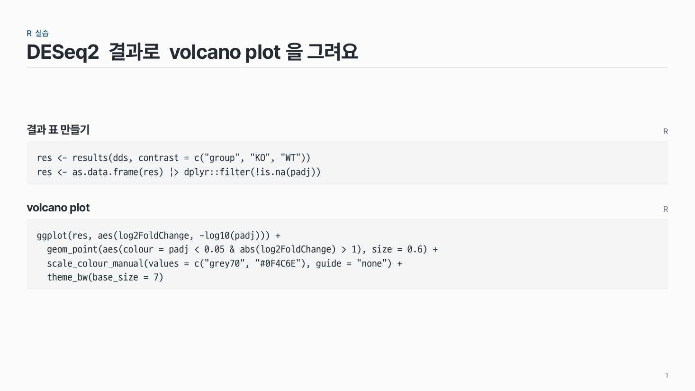
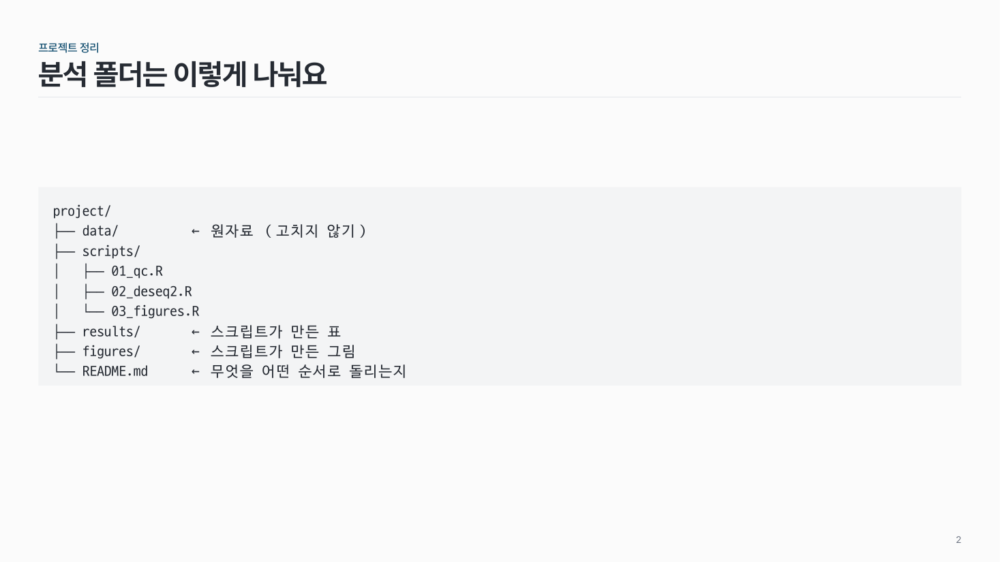
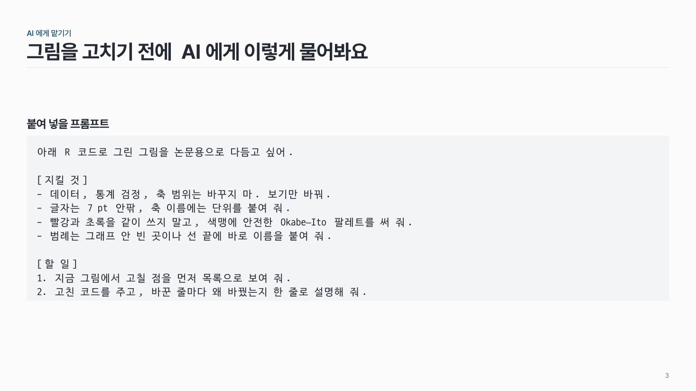

코드 code-01
옅은 회색 면에 고정폭 글꼴(D2Coding)로 코드·명령어·폴더 구조를 글자 그대로 보여 줘요.

이 시안
코드 · 위 설명 · 언어 이름 (블록 둘)
슬라이드 제목: DESeq2 결과로 volcano plot을 그려요
언제 쓰나
코드, 명령어, 폴더 트리, 붙여 넣어 쓰는 프롬프트처럼 글자 그대로 보여야 하는 내용이요. 실습 수업 자료에 자주 써요.
구성
- 위에 설명 한 줄(선택)과 오른쪽에 언어 이름(R, Python 등).
- 아래 옅은 회색 면에 코드를 한 줄씩, 들여쓰기·빈 줄 그대로.
- 줄이 길면 접어서 들여 맞춰요.
지킬 것
- 한 블록 20줄 이내. 길면 장을 나눠요.
- 글꼴은 고정폭 하나(D2Coding). 폴더 트리 선 문자(├ │ └)가 깨지지 않아요.
- 글자 크기는 가장 긴 줄이 들어가는 만큼. 너무 작으면 줄을 나눠요.
하지 말 것
- 코드를 그림(스크린샷)으로 붙이지 않아요. 복사할 수 없어요.
- 문법 색칠을 무지개처럼 하지 않아요. 한 색이면 충분해요.
PowerPoint에서
D2Coding 글꼴이 없는 컴퓨터에서는 다른 글꼴로 바뀌어요. 발표용 PC에도 D2Coding을 설치하거나, pptx를 저장할 때 "글꼴 포함"을 켜요.
시안 비교
같은 내용을 옵션만 바꿔 그렸어요. 그림을 누르면 크게 보여요.
A코드 · 위 설명 · 언어 이름 (블록 둘)
슬라이드 제목: DESeq2 결과로 volcano plot을 그려요

B폴더 트리 (선 문자)
슬라이드 제목: 분석 폴더는 이렇게 나눠요

C긴 줄 접기 (프롬프트, 들여 맞춤)
슬라이드 제목: 그림을 고치기 전에 AI에게 이렇게 물어봐요